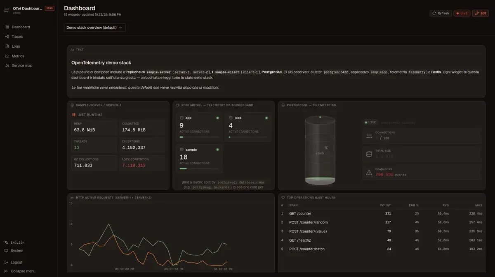
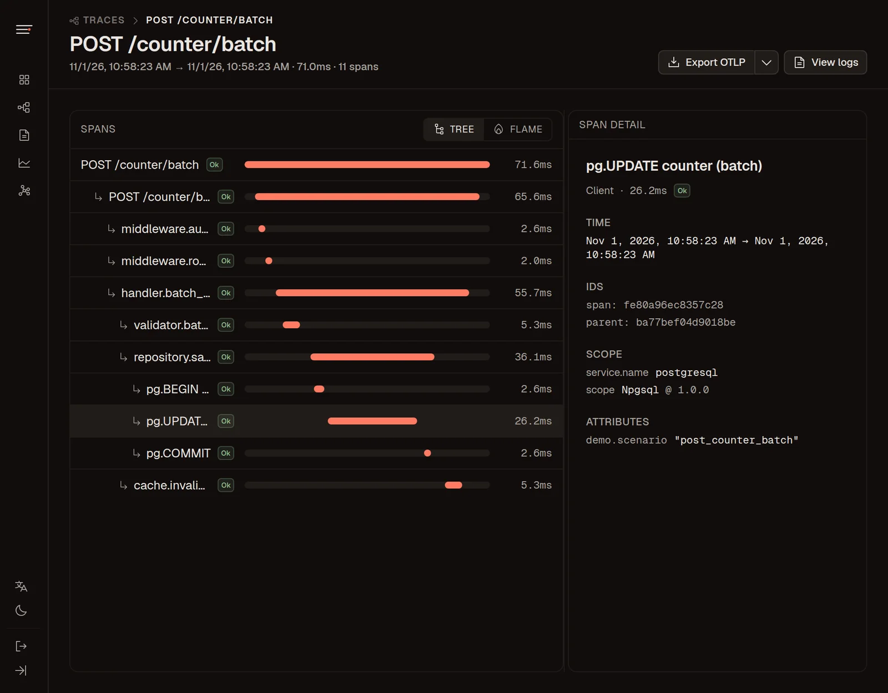
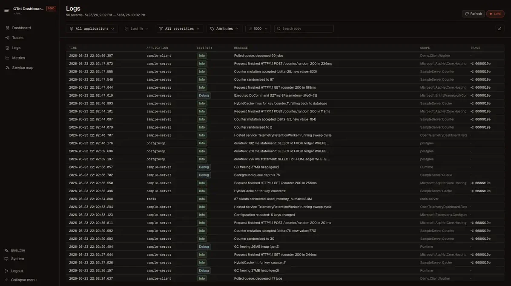
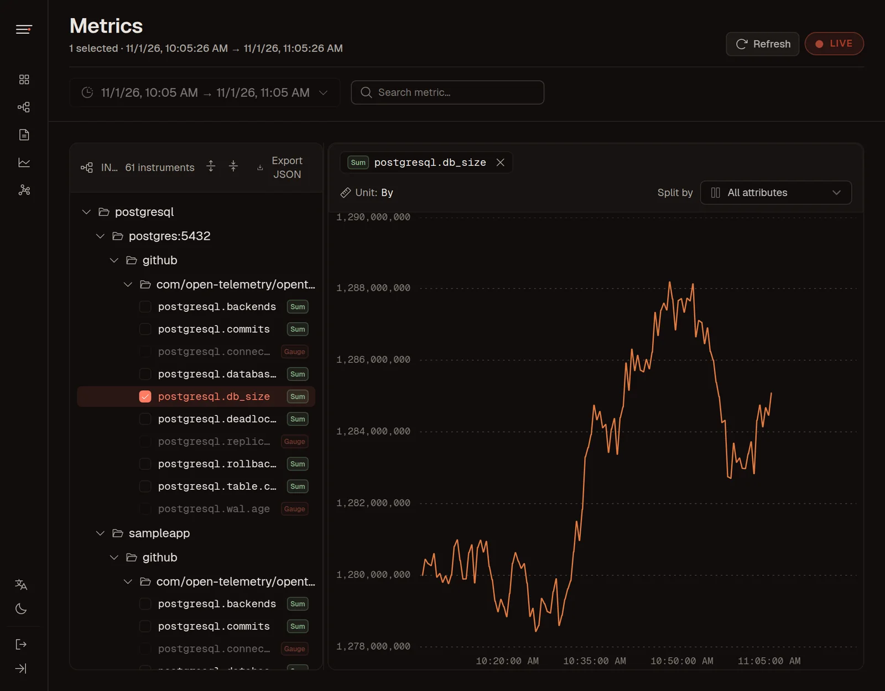
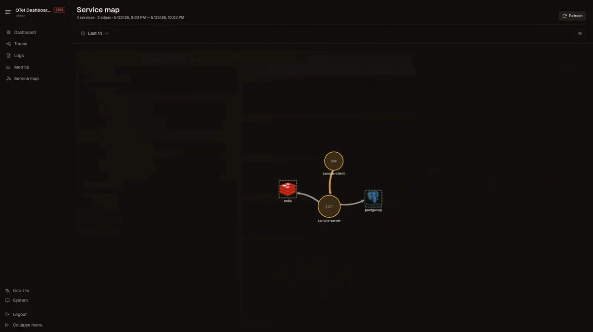
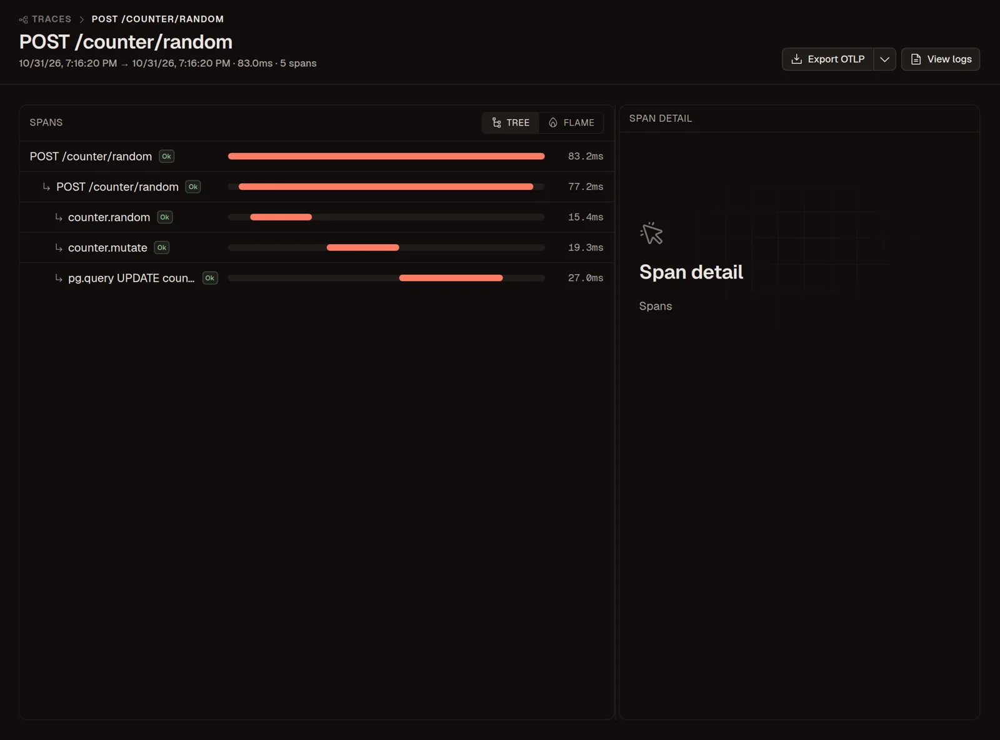
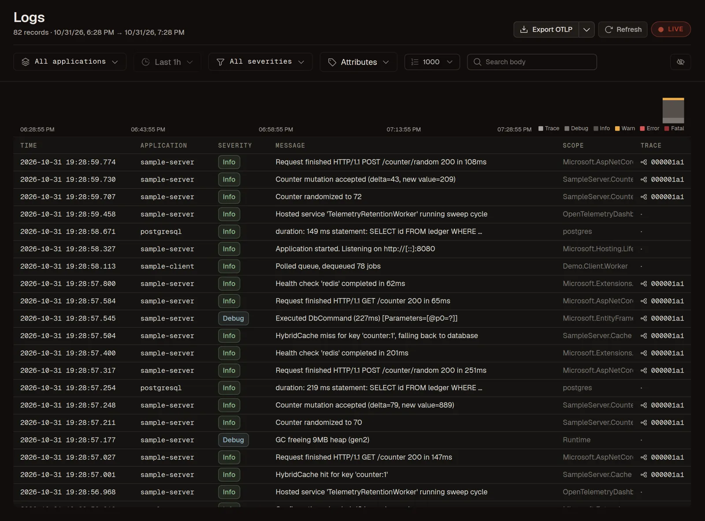
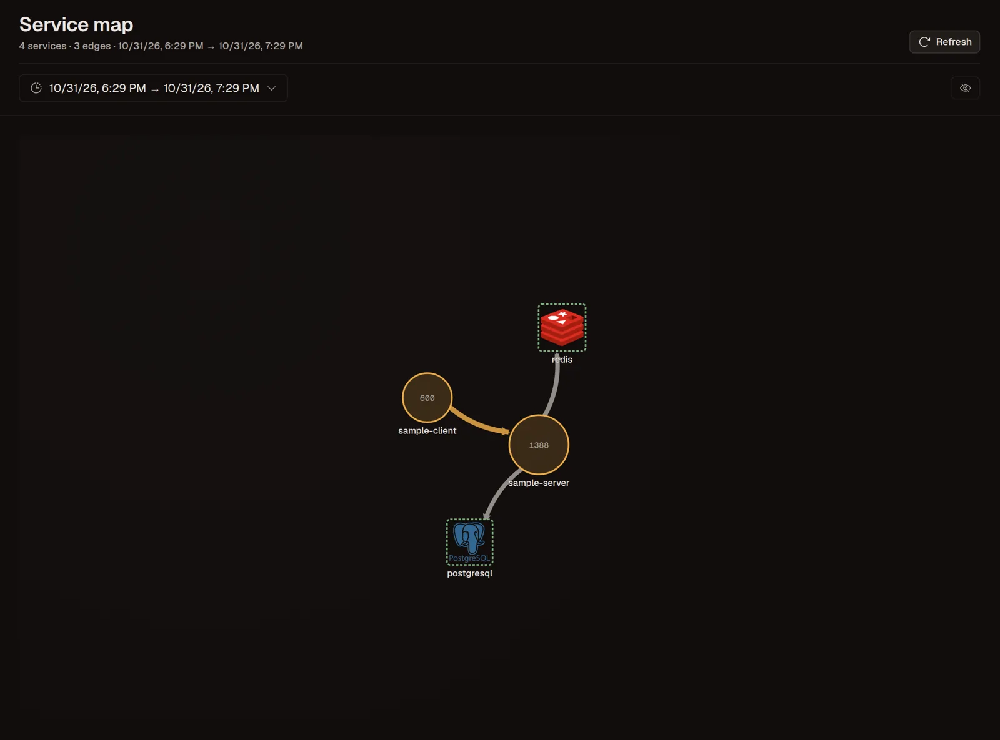

OpenTelemetry dashboard, self-hosted
One container that receives OTLP traces, logs and metrics and shows them in your browser. Stored in SQLite, PostgreSQL or SQL Server.
Open the live demo




Dashboard, from the live demo



Every signal in one place
Traces with a real waterfall
Filter by application, duration, status and attributes, then open a trace to see its span tree, a flame view, every attribute and the logs that share its trace ID.
Logs linked to their traces
Search the body, filter by severity and attributes, and jump from a log line to the trace that produced it. A histogram shows when the errors started.
Metrics by service and instance
Every instrument grouped by service, scope and instance. Pick several of the same kind to chart them together, split by any attribute.
A service map from your spans
Calls between services, databases and caches are drawn from trace data, with request counts on every node. No extra configuration.
Dashboards you build yourself
Drop stat, line, gauge, heatmap, trace and log widgets on a 12-column grid. Save your own widgets, or install packs of widgets and dashboards from a Git repository.
What you get
MCP server for AI assistants
Let Claude Code or any MCP client read your logs, traces and metrics.
Speaks OTLP natively
Point any OpenTelemetry SDK or Collector at it. No agent, no sidecar, no vendor exporter.
Your database
SQLite out of the box. One setting moves it to PostgreSQL or SQL Server.
Retention you set
A background sweep drops old rows per signal.
Two tokens, opt-in
One for the web app, one for ingestion.
Export back to OTLP
Take traces and logs to another tool.
Widget packs from Git
Install widget libraries and dashboards from GitHub or GitLab, pinned to a tag.
Compare
Grafana felt like too much, the Aspire dashboard like too little. Here is where OtlpDashboard sits next to the tools people usually try first.
OtlpDashboard vs the .NET Aspire dashboard
| Aspect | Aspire dashboard (standalone) | OtlpDashboard |
|---|---|---|
| Storage | In memory, cleared on restart | SQLite, PostgreSQL or SQL Server |
| Retention | Count limits per signal | Days per signal, swept in the background |
| Custom dashboards | Fixed views | Widget grid, saved widgets, packs |
| Signals | Traces, logs, metrics | Traces, logs, metrics, service map |
Keep the Aspire dashboard for the inner loop of an Aspire AppHost. Use OtlpDashboard when telemetry has to survive a restart or be shared by a team.
OtlpDashboard vs Jaeger
| Aspect | Jaeger | OtlpDashboard |
|---|---|---|
| Signals | Traces (metrics through a separate Prometheus) | Traces, logs and metrics together |
| Storage | Memory, Badger, Cassandra, Elasticsearch, OpenSearch | SQLite, PostgreSQL, SQL Server |
| Scale | Built for large, distributed deployments | Single node, small and medium workloads |
Pick Jaeger when tracing at scale is the only need. Pick OtlpDashboard when you want logs and metrics next to the traces without running more services.
OtlpDashboard vs Grafana, Tempo, Loki and Prometheus
| Aspect | Grafana stack | OtlpDashboard |
|---|---|---|
| Moving parts | Grafana plus a backend per signal, usually behind a Collector | One container and a database |
| Querying | PromQL, LogQL, TraceQL | Filters and search in the UI |
| Alerting | Yes | No |
| Setup time | Hours to days for a production setup | One docker run |
Grafana is the right call at scale, with alerting and on-call. OtlpDashboard is for teams and side projects that want to see their telemetry today.
OtlpDashboard vs SigNoz
| Aspect | SigNoz | OtlpDashboard |
|---|---|---|
| Backend | ClickHouse plus several services | SQLite, PostgreSQL or SQL Server |
| Scope | Full APM with alerts and exception tracking | Viewer and dashboards, no alerting |
| Footprint | Several gigabytes of RAM recommended | One .NET process |
Choose SigNoz for a complete APM at higher volume. Choose OtlpDashboard when a database you already run is enough.
Running in a minute
Start the container, point your service at it, open localhost:4318. Data is kept in a Docker volume, so it is still there after a restart. Want the full demo stack with sample services? Clone the repo and run docker compose up.
Questions people ask
Yes. It is open source under GPL-3.0 and runs on your own machine or server. Telemetry never leaves the infrastructure you run it on.
Any OpenTelemetry SDK or Collector that exports OTLP over gRPC (port 4317) or HTTP/Protobuf (port 4318): .NET, Java, Node.js, Python, Go, Rust, PHP, Ruby and others. Set OTEL_EXPORTER_OTLP_ENDPOINT and you are done.
The standalone Aspire dashboard keeps telemetry in memory, so it is gone when the container restarts. OtlpDashboard stores it in SQLite, PostgreSQL or SQL Server with time-based retention, and adds custom dashboards, widget packs, auth tokens and an MCP server.
Yes, for small and medium workloads: set the browser and OTLP tokens, pick PostgreSQL or SQL Server, and tune retention. It is a single node with no alerting, so for very high volume or paging on incidents a Grafana stack or a full APM fits better.
Yes. Add an otlp exporter that points at port 4317, or an otlphttp exporter that points at port 4318, and include it in your traces, logs and metrics pipelines.
Yes. Set Dashboard__Mcp__Enabled=true and a Model Context Protocol server is mounted at /mcp. Claude Code, Claude Desktop and other MCP clients can then query logs, traces and metrics with read-only tools.